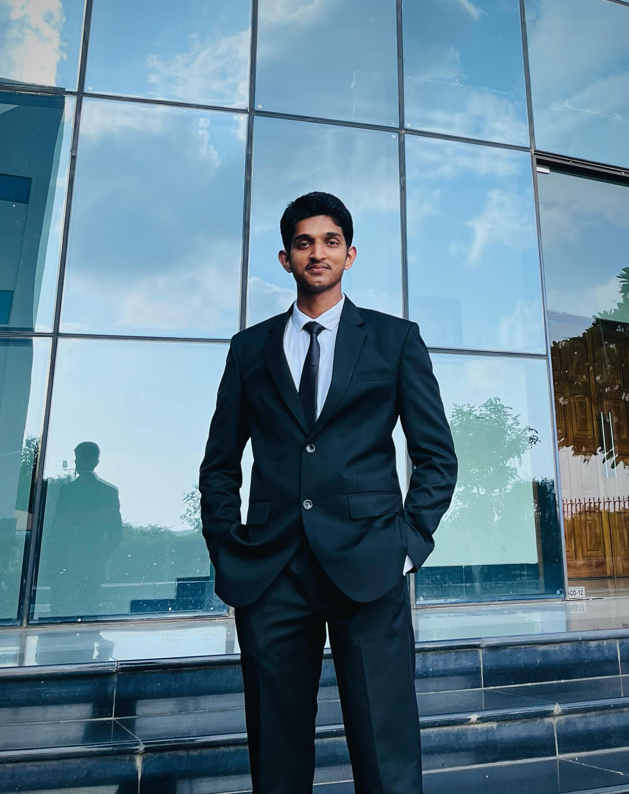
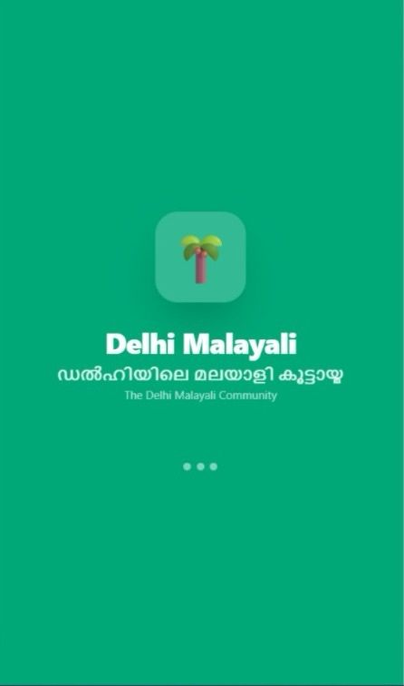
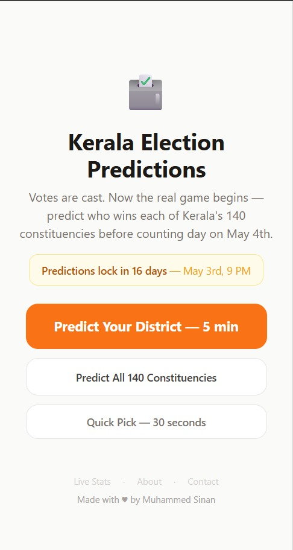
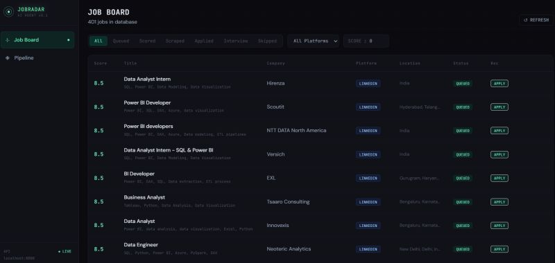
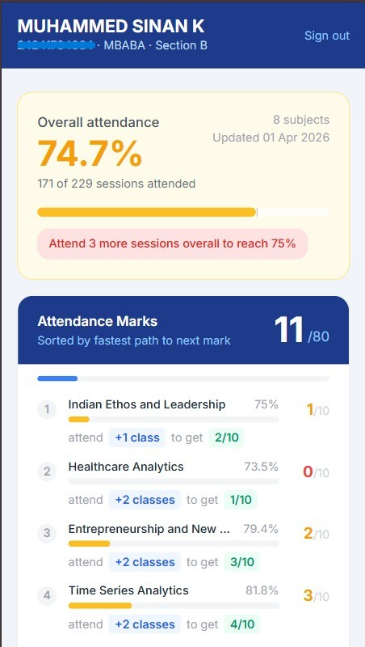
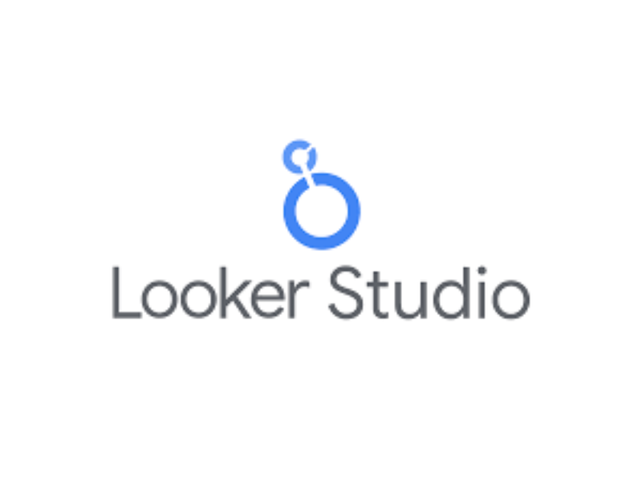

Hi, I'm Sinan
a Business AnalystAspiring Business Analyst and Data Analyst with a passion for turning raw data into meaningful stories. Experienced in Power BI, SQL, Python, and Looker Studio. Currently pursuing an MBA in Business Analytics at the Delhi School of Economics.

What I Do
Data Analytics
Skilled in Power BI, Looker Studio, SQL, Excel, and DAX to analyze data and create insightful dashboards.
Data Science
Experienced in Python and machine learning for predictive analytics and sentiment analysis.
Business Intelligence
Specialized in dashboard design, data visualization, and statistical analysis for decision-making.
Data Engineering
Experienced in SQL and ETL pipelines, with proficiency in Azure and GCP data solutions for seamless data integration.
Programming
Expert in Python, JavaScript, HTML/CSS, and MongoDB for automation and scalable solutions.
Soft Skills
Strong communication, problem-solving, and stakeholder management for effective collaboration.
My Resume
Education
MBA in Business Analytics
B.Com — Banking & Insurance
Secondary & Higher Secondary
Certifications
Microsoft Certified: Azure Data Scientist Associate (DP-100)
MicrosoftMicrosoft Certified: Power BI Data Analyst Associate (PL-300)
MicrosoftGoogle Data Analytics Professional Certificate
GoogleKPMG Lean Six Sigma Green Belt
KPMGVisualization Skills
Development Skills
Job Experience
Accountant
Freelance Web Developer
Internships
Data Analyst
Data Analyst Intern
Equity Analyst Intern
My Portfolio









Contact Me
Muhammed Sinan K
MBA Candidate in Business Analytics
Delhi School of Economics